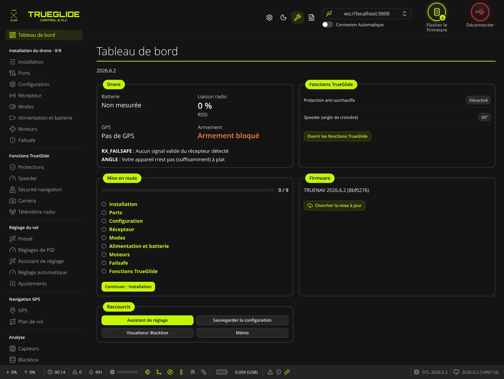
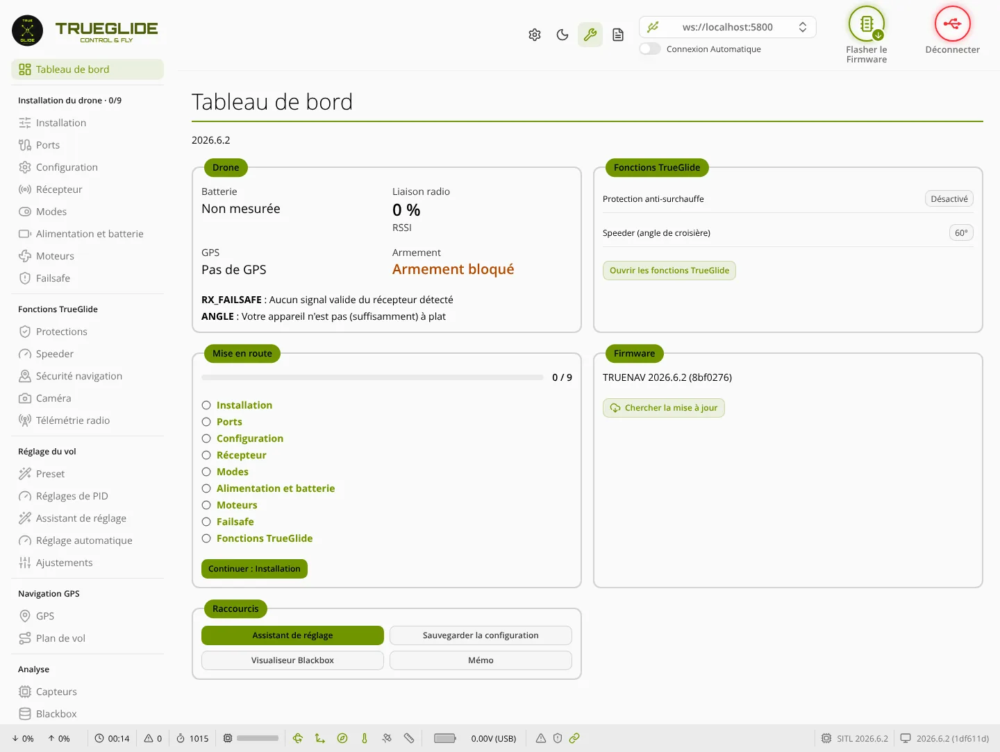

TRUE
TRUETableau de bord
L'onglet Tableau de bord (groupe « Carte branchée ») s'ouvre une fois le drone connecté. Il résume l'état du drone, les fonctions TrueGlide actives, l'avancement de la mise en route, la version du firmware, et donne des raccourcis.


Sous le titre, une ligne donne le nom de la carte et la version du firmware (par exemple « SPEEDYBEEF405MINI · 2026.6.2 »). Les valeurs du cadre Drone sont relues deux fois par seconde.
Drone
- Batterie : tension mesurée par la carte, en V. Affiche « Non mesurée » si la tension est de 0,5 V ou moins (pas de batterie, ou capteur de tension non réglé). Si la carte a détecté le nombre d'éléments, une ligne ajoute par exemple « 4S · 3,9 V par élément ».
- Liaison radio : niveau RSSI reçu par la carte, en %. 0 % sans récepteur ou sans signal.
- GPS : nombre de satellites, avec « satellites · position trouvée » ou « satellites · pas encore de position ». Affiche « Pas de GPS » si aucun GPS n'est actif sur la carte.
- Armement : « Prêt à armer » ou « Armement bloqué ». Quand l'armement est bloqué, la liste dessous donne chaque raison (nom court du firmware, puis explication), par exemple RX_FAILSAFE : aucun signal valide du récepteur, ou ANGLE : la carte n'est pas assez à plat. L'interrupteur d'armement lui-même n'est pas compté comme un blocage.
Fonctions TrueGlide
État lu sur la carte à l'ouverture de l'onglet. Une fonction absente du firmware n'est pas listée.
- Protection anti-surchauffe : « Activé » avec la limite de température (°C) et/ou de courant (A), ou « Désactivé » si les deux limites sont à 0.
- Relance moteur (désynchronisation) : « Activé » ou « Désactivé ».
- Speeder (angle de croisière) : l'angle réglé, en degrés (60° par défaut). Le mode ne s'active que par un interrupteur.
- Sorties commandées (PINIO) : sorties de la carte reliées à un interrupteur de la radio (par exemple « PINIO1 → USER1 »). Le logiciel ne sait pas ce qui est branché sur la sortie (caméra, VTX…).
Si le message « Ce firmware n'a pas les fonctions TrueGlide (ou la lecture a échoué). » s'affiche, la carte a un firmware Betaflight ou la lecture n'a pas abouti. Le bouton Ouvrir les fonctions TrueGlide mène à l'onglet Protections.
Mise en route
Barre de progression et compteur (par exemple « 0 / 9 ») des 9 étapes de la mise en route guidée : Installation, Ports, Configuration, Récepteur, Modes, Alimentation et batterie, Moteurs, Failsafe, Fonctions TrueGlide. Chaque nom est un lien vers l'onglet. Un rond coché marque une étape validée.
- Continuer : … : ouvre la première étape non validée.
- « Toutes les étapes sont réglées. » quand les 9 sont validées.
- Afficher le guide : visible si le guide a été masqué ; le fait réapparaître en haut des onglets.
L'avancement est gardé dans le navigateur, pour chaque carte. Il n'est pas écrit sur la carte. Détail des étapes : Mise en route.
Firmware
Ligne du firmware installé : modèle, version et révision entre parenthèses (par exemple « TRUENAV 2026.6.2 (8bf0276) »). Une carte qui n'a pas les fonctions TrueGlide est affichée « Betaflight ».
- Chercher la mise à jour : lit la liste des firmwares publiés (le seul moment où cet onglet contacte Internet). Réponses possibles : « À jour : … », « Nouvelle version publiée : … », « Pas de firmware publié pour … », ou « La carte ne donne pas son nom : choisissez-la dans Flasher le Firmware, mise à jour en ligne. ».
- Mettre à jour : apparaît si un firmware est publié pour cette carte et que sa révision n'est pas celle installée. Il déconnecte le drone, ouvre Flasher le Firmware et y télécharge le fichier. Il faut ensuite cliquer sur Flasher le Firmware.
Raccourcis
- Assistant de réglage : ouvre l'onglet Assistant de réglage.
- Sauvegarder la configuration : lit
diff allsur la carte et télécharge un fichier texte nommétrueglide_<carte>_<date-heure>.txt. Le message « Configuration enregistrée : … » confirme, ou « Sauvegarde impossible : … » en cas d'échec. À faire avant de changer des réglages. - Visualiseur Blackbox : ouvre l'onglet Visualiseur Blackbox.
- Mémo : ouvre la page Mémo de l'onglet Mémo & Wiki.